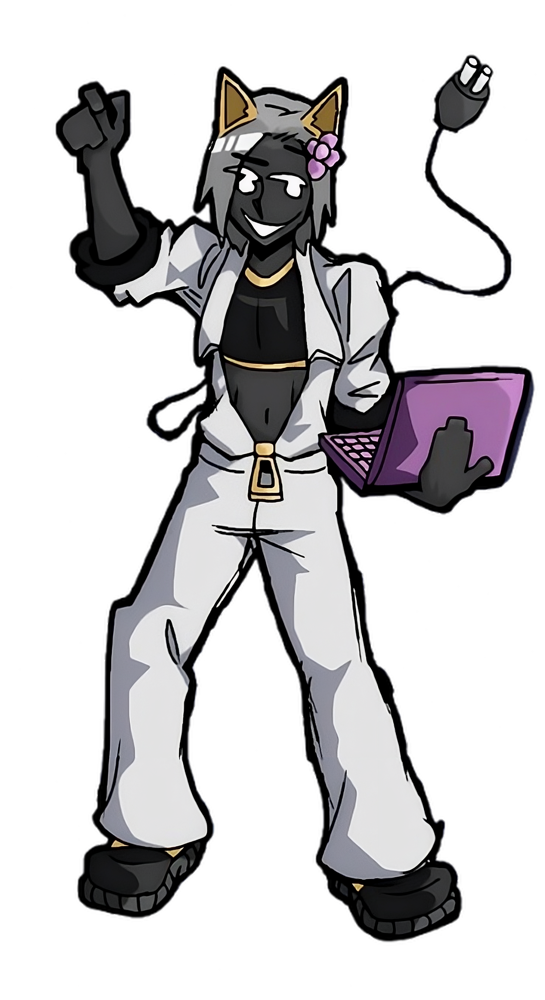

Hybrid-sharding clusters
Shards are grouped into clusters supervised by a manager process, so Relaxy! can quickly scale and adjust to server demands.
 Relaxy!
Relaxy!

Multipurpose Discord Bot
Function over form. Every feature is free - no paywalls, not now, nor ever! No matter how demanding a server is.
Invite Relaxy!About
Relaxy! is a bot made to combat the aggressive monetization of big multi-functional bots. Every feature is free and will never be pay-walled. Updates happen daily and suggestions in the support server are added over time. Relaxy! is function over form which means it can be hard to use, however, once mastered it's infinitely flexible.
I offer full real time support for free to every server owner that uses Relaxy! Every server owner with more than 100 users can request anything they want into the bot as long as it will benefit every user of Relaxy!
Relaxy!'s internals feature a real time monitoring system to ensure as little downtime as possible. I still self host the bot as it's too expensive to keep on the cloud for now.
I offer my infinite gratitude to anyone who supports this project financially, if you decide to do so, I'll add in anything you request, as long as it benefits every user and isn't a completely whack idea.

Features
Under the hood
A lot of careful work went into ensuring Relaxy! has the highest uptime possible. I've implemented a lot of redundancies and fail-over systems to make sure that even if something breaks, it's automatically corrected.
Shards are grouped into clusters supervised by a manager process, so Relaxy! can quickly scale and adjust to server demands.
An ADSR diagnostic system watches error rates and silently restarts misbehaving shards; a heartbeat manager revives unresponsive and/or broken clusters.
Updates roll out shard-by-shard in real time, without a global restart, no interruption to your server.
Database writes are queued and flushed in 200 ms batches on a dedicated worker thread. No updates will be lost, as there is a robust and extensive local cache in place.
Modules reload from source on the fly, so I can deliver fixes and features without taking the bot offline.
A live monitoring system tracks module health and uptime so downtime stays minimal, all self-hosted.
Heavy database, file and processing work runs on dedicated worker threads, so the gateway never blocks on disk or I/O. Commands won't slow down.
Discord.js's in-built limiter was not enough. I've built my own that synchronises across shards, it can actually be used for any limitable action.
The censor normalizes look-alike characters, spacing tricks and zero-width junk with natural-language tooling, so filter-dodging still gets caught, even on edited messages.
Built on discord-player v4, updated by me since then: YouTube, SoundCloud and Spotify resolution, a live queue, audio filters and an equalizer, with smart buffering for clean playback.
Dozens of image and GIF commands are rendered locally with canvas, canvacord and sharp with no external image services involved.
Per-user voice capture writes separate streams for each speaker, so recordings stay clean and individually usable, also entirely written by me.
Commands
145 commands across five categories. Most work as both the = prefix and / slash commands. You can also set your own prefixes if you like.

Support
Support the continued development of Relaxy! Get custom commands, suggestion priority and more.
Support on Ko-fi ❤
Community Stuff
Join the support server for real-time help, or check Relaxy! out on top.gg.
And better yet - vote for Relaxy!
Vote for Relaxy!